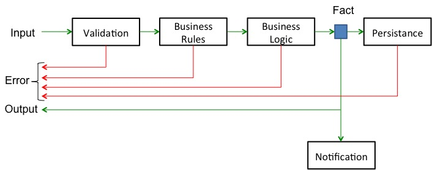
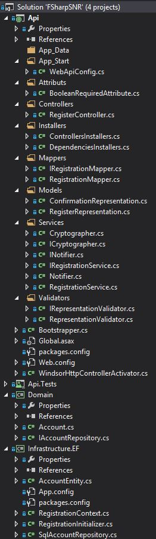
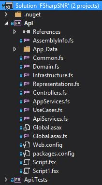

Multiple items
Multiple items
union case Option.Some: Value: 'T -> Option<'T>
Multiple items
val tail : list:'T list -> 'T list
union case Option.None: Option<'T>
Multiple items
Multiple items
type 'T option = Option<'T>
val ignore : value:'T -> unit
val fst : tuple:('T1 * 'T2) -> 'T1
module Option
val bind : binder:('T -> 'U option) -> option:'T option -> 'U option
About me
During the day software architect developer in finance
During the night working on startup project rocketcv.pl
The rest of the time running two user communities in Paris
Tweetting @tjaskula and blogging occasionally at jaskula.fr
Playing guitar...
This talk is about
Benefits of moving from OOP to FP for a startup project
I'm not an expert in FP.
If you're a FP expert so this may learn you nothing. If some people leave I won't be offended.
I've always been an OOP developer
but...
The snake which cannot cast its skin has to die. As well the minds which are prevented from changing their opinions; they cease to be mind.
Friedrich Nietzsche
Context
Building a startup it's not just about writing the code
Time spent on non technical tasks
Business plan
Market survey
Advertising
Legal
etc.
Legal stuff: privacy policy, terms of use
Time spent on technical tasks
Not directly related to coding activity
Hosting
Build and deployment processes
Integrating with external web APIs services
etc.
Studying external Apis for point of integration like StackOverflow, GitHub
Time spent for coding must deliver real business value
Can we measure the part of business value inside our code ?
There is no automatic tool or metric that can be used.
Introducing to SNR
Signal-to-Noise Ratio
Compares a level of desired signal to the level of background noise.
\(\mathrm{SNR} = \frac{\mu_\mathrm{sig}}{\sigma_\mathrm{bg}}\)
Mean (μ)
Standard Deviation (σ)
SNR = μ / σ = 32 / 11.51086 = 2.7799834243488326
1:
2:
3:
Signal to noise ratio is a measurement of the audio signal level compared to the noise level present in the signal . SNR specifications are used in components such as amplifiers , CD / DVD players etc . ,
Signal - to - noise ratio is sometimes used informally to refer to the ratio of useful information to false or irrelevant data in a conversation or exchange . For example , in online discussion forums and other online communities , off - topic posts and spam are regarded as " noise " that interferes with the " signal " of appropriate discussion .
SNR relation to the code
SIGNAL = Information producing Business Value NOISE = Everything else impeding the convey of Information
Signal
"Signal is information which conveys knowledge via facts. Knowledge is derived from Facts. Fact is produced by Business Use Case in time"
Signal properties
Fact that happened incorporated in timeFact is an Immutable Value
Decisions are made on facts (humans and machines)
What is Fact ? it's not a place (like in OOP language) but rather a value Fact = something that happend, that existed, incorporate time
Knowledge is derived from facts, comparing facts from different time points all the time.
If mutable in a time a needs to be protected (OOP) (lock?)
Why this is important ? We can assert on Facts and not on mechanisms
Noise
"Everything which infers with a signal and not contribute to the Knowledge "
Noise properties
Irrelevant or false data
Fact mutation
Everything that hinders readability of Facts
Categories of code noises
Organization
Readability
Correctness
Expressiveness
Frameworks
Effort
Complexity
Organization : how the code is structured
Readability : how it is easy to read the code. Most of the time we are reading to understand the code, naming
Correctness : modeling with types, null reference exceptions, no side effects, try catch
Expressiveness : how much plumbing code, curly braces punctuations, powerfull type inference
Frameworks : how many frameworks for DI, AOP, ORMS
Effort : how difficult is to write code, maintain and refactor, know design patterns etc.
Complexity : cyclic dependencies, LoC, Cyclomatic Complexity
Theoretical metric
Applicable to each business use case
\(\mathrm{CodeSNR} = \frac{LoC_\mathrm{domainUseCase}}{LoC_\mathrm{total}}\times{100}\)
The bigger the CodeSNR is, the better it is
Unfortunately there is no automatic tool to measure it...
Categories of noises
Can be measured
Correctness
Expressiveness
Frameworks
Complexity
Categories of noises
Just a subjective estimation
Organization
Readability
Effort
Let's create a REST service
Registration process business rules:
All fields are required (email, password, privacy selection, provider)
Password should match the password policy
Email address should be unique
If user from trusted provider then email is automaticaly confirmed
If not, an activation code should be created and sent to the user's email address
Account is created and password is crypted
ASP.NET Web Api 2
C# naive implementation
C# OOP implementation
F# implementation
Registration Use Case

Naive OOP implementation (Page 1)
[HttpPost]
[Route("api/register" )]
public IHttpActionResult Register(RegisterRepresentation rep)
{
var confirmationUrl = new Uri(Request.RequestUri, "/confirmation" );
if (ModelState.IsValid)
{
if (!Regex.IsMatch(rep.Password,
@"(?!.*\s)[0-9a-zA-Z!@#\\$%*()_+^&}{:;?.]*$" ))
{
ModelState.AddModelError("password" , "The password
does not match the policy" );
return BadRequest(ModelState);
}
IHttpActionResult response = Ok();
Naive OOP implementation (Page 2)
using (var ctx = new RegistrationContext())
{
if (ctx.Accounts.Any(a = > a.Email = = rep.Email))
return Conflict();
var cryptographer = new Cryptographer();
string cryptedPassword = cryptographer.GetPasswordHash(
rep.Password, cryptographer.CreateSalt());
var account = new Account
{
Email = rep.Email,
Password = cryptedPassword,
Provider = rep.Provider
};
account.ConfirmEmail(DateTime.Now);
Naive OOP implementation (Page 3)
if (!account.IsEmailConfirmed)
{
account.SetActivationCode(Guid.NewGuid(), DateTime.Now.AddDays(5));
var notifier = new Notifier();
notifier.SendActivationNotification(account.Email);
response = Created(confirmationUrl, new ConfirmationRepresentation
{
Email = account.Email,
Code = account.ActivationCode,
ExpirationTime = account.ActivationCodeExpirationTime.Value
});
}
ctx.Accounts.Add(account);
ctx.SaveChanges();
return response;
}
}
return BadRequest(ModelState);
}
Observations
Procedural code
State mutation
Decisions made by intermediate steps
Orchestrated by client
Cannot be tested
Naive OOP implementation noises
Lines of code: 399
Correctness: 26%
Expressiveness: 25%
Frameworks: 42%
Complexity: Max 6 - Average 1.56
Organization: Easy
Readability: Bad
Effort: High
7%
We can do better
OOP should not be procedural. Let's introduce some abstractions
public interface IRepresentationValidator
{
bool Validate(RegisterRepresentation representation);
}
public interface IRegistrationService
{
bool ShouldConfirmSubscription(RegisterRepresentation rep);
bool CanRegister(string accountEmail,
Func<string , Account> canRegister);
Account Register(RegisterRepresentation rep);
}
public interface INotifier
{
void SendActivationNotification(string emailAddress);
}
public interface IAccountRepository
{
Account FindByEmail(string email);
void Save(Account account);
}
Refactored OOP implementation (Page 1)
[HttpPost]
[Route("api/register" )]
public IHttpActionResult Register(RegisterRepresentation rep)
{
var confirmUrl = new Uri(Request.RequestUri, "/confirm..." );
if (_validator.Validate(rep))
ModelState.AddModelError("password" ,
"The password format does not match the policy" );
if (ModelState.IsValid)
{
if (!_registrationService.CanRegister(rep.Email,
email = > _accountRepository.FindByEmail(email)))
return Conflict();
IHttpActionResult response = Ok();
// what if this is null ?
var account = _registrationService.Register(rep);
Refactored OOP implementation (Page 2)
if (_registrationService.ShouldConfirmSubscription(rep))
{
account.SetActivationCode(Guid.NewGuid(),
DateTime.Now.AddDays(5));
_notifier.SendActivationNotification(account.Email);
response = Created(confirmUrl,
new ConfirmationRepresentation
{
Email = account.Email,
Code = account.ActivationCode,
ExpirationTime =
account.ActivationCodeExpirationTime.Value
});
}
_accountRepository.Save(account);
return response;
}
return BadRequest(ModelState);
}
Observations
Composition through dependencies and abstractions
State mutation
Decisions made by intermediate steps
Orchestrated by client
Testable
Lines of code explosion because of new "abstractions"
Refactored OOP implementation noises
Lines of code: 574 (+45%)
Correctness: 25% (+1%)
Expressiveness: 34% (+9%)
Frameworks: 42% (-6%)
Complexity: Max 5 - Average 1.56
Organization: Hard
Readability: Good
Effort: Medium
5% (-2%)
Some noises
Language construction
public RegisterController(
IAccountRepository accountRepository,
IRepresentationValidator validator,
IRegistrationService registrationService,
INotifier notifier)
{
if (accountRepository = = null )
throw new ArgumentNullException("accountRepository" );
if (validator = = null )
throw new ArgumentNullException("validator" );
if (registrationService = = null )
throw new ArgumentNullException("validator" );
if (notifier = = null )
throw new ArgumentNullException("notifier" );
_accountRepository = accountRepository;
_validator = validator;
_registrationService = registrationService;
_notifier = notifier;
}
Some noises
Introduction of ORM framework
Introduction of DI framework
Introduction of Mappers between layers
Some noises
Interface map to implementation 1:1

Some noises
Reused Abstraction Principle violated
F# signal improvement
HTTP is a functional type
1:
type Http = Request -> Response
Business Use Case as a function
1:
let useCase = ' Input -> ' Fact
Http as function
1:
2:
3:
4:
5:
6:
type Http = Request < ' T > ->
// business use case
(' Input -> ' Fact ) ->
Response < ' Fact >
Error handling
1:
2:
3:
4:
5:
6:
7:
8:
type Result < ' TSuccess ,' TFailure > =
| Success of ' TSuccess
| Failure of ' TFailure
type Error =
| ValidationError of string
| AccountExists of string
| DatabaseError of string
*Railway Programming http://fsharpforfunandprofit.com/posts/recipe-part2/
Http as function with error handling
1:
2:
3:
4:
5:
6:
type Http = Request < ' T > ->
// business use case
(' T -> Result < ' Fact , Error > ) ->
Response < _>
Business use case
validate input
invoke domain
persist
return result or error
Step 1 : Input validation
1:
2:
3:
4:
5:
6:
7:
8:
9:
10:
11:
12:
13:
let passwordPolicy registerRepresentation =
match registerRepresentation . Password with
| Match @" ( ? ! . * \ s ) [ 0 - 9 a - zA - Z ! @ # \ \ $ % * ( ) _ + $ " _ ->
registerRepresentation |> Success
| _ -> ValidationError (" The password format does
not match the policy " )
|> Failure
//-----------------
val passwordPolicy : RegisterRepresentation
-> Result < RegisterRepresentation , Error >
Active patterns
1:
2:
3:
4:
5:
let (|Match |_|) regex str =
let m = Regex (regex ). Match (str )
match m . Success with
| true -> Some (List . tail [for g in m . Groups -> g . Value ])
| false -> None
Input validation composition
1:
2:
3:
4:
5:
6:
let validateAll =
passwordPolicy &&& checkPrivacy
//-----------------
val validateAll : (RegisterRepresentation
-> Result < RegisterRepresentation , Error > )
1:
2:
3:
4:
5:
6:
7:
8:
let (&&& ) v1 v2 =
let addSuccess r1 r2 = r1 // return first
let addFailure s1 s2 = concatErrors [s1 ; s2 ] // concat
plus addSuccess addFailure v1 v2
//-----------------
val v1 : (' a -> Result < ' b , Error > )
val v2 : (' a -> Result < ' c , Error > )
Registration use case
After step 1
1:
2:
3:
4:
5:
let useCase = Validation . validateAll
//-----------------
(RegisterRepresentation ->
Result < RegisterRepresentation ,Domain . Error > )
Step 2 : Designing domain with types
1:
2:
3:
4:
5:
6:
7:
8:
9:
10:
11:
12:
13:
14:
15:
16:
type EmailAddress = EmailAddress of string
type VerifiedEmailAddress = VerifiedEmail of EmailAddress
type EmailAddressContactInfo =
| Unverified of EmailAddress
| Verified of VerifiedEmailAddress
[<NoEquality ;NoComparison >]
type Account =
{
Email : EmailAddressContactInfo
Password : string
Provider : string
Confirmation : ConfirmationInfo option
}
In functional design though, having "dumb data" with transparency is preferred. It is normally fine for the data to be exposed without being encapsulated. The data is immutable, so it can't get "damaged" by a misbehaving function. And it turns out that the focus on transparent data allows for more code that is more flexible and generic.
OO classes shouls have behaviour operating on private state. Just state is a bad design "Anemic domain". In F# data is separated from functions
Designing with types
"It is better to have 100 functions operate on one data structure than 10 functions on 10 data structures" -- Alan Perlis
OO classes shouls have behaviour operating on private state. Just state is a bad design "Anemic domain". In F# data is separated from functions
Mapping to domain
1:
2:
3:
4:
5:
6:
7:
8:
9:
let normalizeEmail registerRepresentation =
{
Account . Email =
registerRepresentation . Email . Trim (). ToLower ()
|> EmailAddress |> Unverified
Password = registerRepresentation . Password
Provider = registerRepresentation . Provider
Confirmation = None
}
Registration use case
After step 2
1:
2:
3:
4:
5:
6:
7:
let useCase =
Validation . validateAll
> > map Validation . normalizeEmail
//-----------------
(RegisterRepresentation ->
Result < Account ,Domain . Error > )
Map function
1:
2:
3:
4:
let map f x =
match x with
| Success s -> Success (f s )
| Failure f -> Failure f
Step 3 : Domain logic and types
1:
2:
3:
4:
5:
6:
7:
8:
9:
10:
11:
12:
llet tryConfirmEmail account =
match account . Email with
| Unverified e when account . Provider = " OAuth " ->
{account with Email = e
|> VerifiedEmail
|> Verified }
|> Success
| Unverified _ -> account |> Success
| Verified _ ->
" Email can't be verified at this step "
|> ValidationError
|> Failure
Registration use case
After step 3
1:
2:
3:
4:
5:
6:
7:
8:
9:
let useCase =
Validation . validateAll
> > map Validation . normalizeEmail
> > bind RegistrationService . tryConfirmEmail
> > bind RegistrationService . setActivationCode
//-----------------
(RegisterRepresentation ->
Result < Account ,Domain . Error > )
Bind function
1:
2:
3:
4:
let bind f x =
match x with
| Success s -> f s
| Failure f -> Failure f
Persisting with Type Providers
1:
2:
3:
4:
5:
6:
let persistRegistration =
tryCatch (tee (save mapRegistration ))
(fun ex -> DatabaseError (ex . Message ))
//-----------------
val persistRegistration : (Account -> Result < Account ,Error > )
Returning a result from dead end
1:
2:
3:
let tee f x =
f x |> ignore
x
Try catch
1:
2:
3:
4:
5:
let tryCatch f exnHandler x =
try
f x |> Success
with
| ex -> exnHandler ex |> Failure
Persistance mapping with Type Providers
1:
2:
3:
4:
5:
6:
7:
8:
9:
10:
11:
12:
13:
14:
15:
16:
17:
18:
19:
20:
21:
22:
23:
type dbSchema = SqlDataConnection < " . . . " >
let save map input =
let db = dbSchema . GetDataContext ()
let newRecord = map input
db . AccountEntity . InsertOnSubmit (newRecord )
db . DataContext . SubmitChanges ()
let mapRegistration input =
let newRecord = new dbSchema . ServiceTypes . AccountEntity ()
newRecord . Password <- input . Password
newRecord . Provider <- input . Provider
let email , isConfirmed = getEmail input
newRecord . Email <- email
newRecord . IsEmailConfirmed <- isConfirmed
newRecord
Compose business use case
1:
2:
3:
4:
5:
6:
7:
8:
let start =
Validation . validateAll
> > map Validation . normalizeEmail
> > bind RegistrationService . tryConfirmEmail
> > bind RegistrationService . setActivationCode
> > bind Database . findByEmailRegistration
> > bind Database . persistRegistration
> > bind Notification . sendActivationEmail
Compose business use case'
1:
2:
3:
4:
5:
6:
7:
8:
let start x =
Validation . validateAll
> > map Validation . normalizeEmail
> => RegistrationService . tryConfirmEmail
> => RegistrationService . setActivationCode
> => Database . findByEmailRegistration
> => Database . persistRegistration
> => Notification . sendActivationEmail
Bind infix operator
1:
2:
3:
4:
5:
6:
let (> > = ) m f =
bind f m
// kleisli operator
let (> => ) f1 f2 =
fun x -> f1 x > > = f2
Compose business use case''
1:
2:
3:
4:
5:
6:
7:
8:
let start x =
Validation . validateAll
> !> Validation . normalizeEmail
> => RegistrationService . tryConfirmEmail
> => RegistrationService . setActivationCode
> => Database . findByEmailRegistration
> => Database . persistRegistration
> => Notification . sendActivationEmail
Map infix operator
1:
2:
3:
4:
5:
let (<!> ) m f =
map f m
let (> !> ) f1 f2 =
fun x -> f1 x <!> f2
Register it within Web Api framework
1:
2:
3:
4:
5:
6:
type CustomControllerActivator () =
interface IHttpControllerActivator with
member x . Create (request , controllerDescriptor ,
controllerType ) =
new RegisterController (UseCases . Registration . start )
:> IHttpController
Handle it
1:
2:
3:
4:
5:
6:
7:
8:
9:
10:
11:
12:
13:
14:
15:
16:
17:
18:
19:
20:
21:
22:
23:
24:
[<HttpPost >]
[<Route (" api / register " )>]
member x . Register (representation : RegisterRepresentation ) =
let confirmUrl = Uri (x . Request . RequestUri , " / confirm . . . " )
match startProcess representation with
| Success s ->
match s . Confirmation with
| Some c ->
match c . Activation with
| Some a -> x . Created (confirmUrl ,
{
Email = fst (getEmail s )
Code = a . ActivationCode
}) :> IHttpActionResult
| None -> x . Ok () :> IHttpActionResult
| None -> x . Ok () :> IHttpActionResult
| Failure f ->
match f with
| ValidationError ve -> x . BadRequest (x . ModelState )
:> IHttpActionResult
| AccountExists _ -> x . Conflict () :> IHttpActionResult
| DatabaseError de ->
x . InternalServerError (Exception (de ))
:> IHttpActionResult
Handle it with computation expressions
1:
2:
3:
4:
5:
6:
7:
8:
9:
10:
11:
12:
13:
14:
15:
16:
17:
18:
19:
20:
21:
22:
23:
24:
25:
26:
27:
28:
29:
30:
[<HttpPost >]
[<Route (" api / register " )>]
member x . Register2 (representation : RegisterRepresentation ) =
let confirmUrl = Uri (x . Request . RequestUri , " / confir . . . " )
match startProcess representation with
| Success s ->
let rsp =
maybeRes
{
let! confirmation = s |> (fun a -> a . Conf )
let! activation = confirmation
|> (fun c -> c . Acti )
let! r = (s , activation ) |> (fun (ss , a ) ->
Some (getConf (fst (getEmail ss )) a ))
return r
}
match rsp with
| Some r -> x . Created (confirmUrl , r )
:> IHttpActionResult
| None -> x . Ok () :> IHttpActionResult
| Failure f ->
match f with
| ValidationError ve -> x . BadRequest (x . ModelState )
:> IHttpActionResult
| AccountExists _ -> x . Conflict ()
:> IHttpActionResult
| DatabaseError de ->
x . InternalServerError (Exception (de ))
:> IHttpActionResult
Computation expression
1:
2:
3:
4:
5:
6:
7:
8:
type MaybeResBuilder () =
member this . Bind (x , f ) = Option . bind f x
member this . Return (x ) =
Some x
let maybeRes = new MaybeResBuilder ()
Easy testing
1:
2:
3:
4:
5:
6:
7:
8:
9:
10:
11:
12:
13:
14:
15:
16:
17:
18:
19:
20:
21:
22:
23:
[<Fact >]
let ``Post returns 'Ok' on valid data and trusted provider`` () =
let start _ = { Account . Email = " test @ email . fr "
|> EmailAddress
|> VerifiedEmail
|> Verified
Password = " pass "
Provider = " OAuth "
Confirmation = None } |> Success
use controller = new RegisterController (start )
controller . Request <- new HttpRequestMessage (HttpMethod . Post ,
" http : / / localhost / api / register " )
let representation = {Email = " test @ email . fr "
Password = " pass "
Privacy = true
Provider = " OAuth " }
let result : IHttpActionResult = controller . Register representation
result |> should be ofExactType < Results . OkResult >
Observations
Composition through functions
Functions are also values
No state mutation
Business use case function
Testable
F# implementation noises
Lines of code: 397
Correctness: 5% (-20%)
Expressiveness: 10% (-24%)
Frameworks: 28% (-14%)
Complexity: N/A
Organization: Easy
Readability: Excellent
Effort: Low
23% (+16%)
Code organisation

What's nice about this approach is that, if you are a newcomer to a code base, you always know where to start. The first few files will always be the "bottom layer" of an application and the last few files will always be the "top layer". No folders needed!
How we've improved the signal with F#
No need of frameworks for DI
No need of AOP frameworks
No need of ORM frameworks
No need to know 23 OOP patterns and more
DI : Partial application
Dependencies can only happen when a specific type is referenced. If you use generic types, you cannot have a dependency! And rather than hard coding behavior for a type, why not parameterize it by passing in functions instead?
A more functional approach: separating types from functions
AOP: Higher level functions, monads level of abstractions to hide complexisty
OOP
"OOP promise REUSE = Big Lie" -- Rich Hickey
OOP promis REUSE = Big Lie (everything new you need you write a new class) Different classes with same name fields and we can do nothing because of specificity.
Values
Shared freely, no one can mess up
No locks, copy, clone easy to fabricate (testing, simulation)
Discurage imperative programming
Generic (map, list, sets)
Best interface
Can be composed and aggregated
values can be moved, ported and the so (how do you do when you have to move between different interfaces ?)
values aggregates values (COMPOSITION) how do you agregate places in OOP ?
you can't have a single view on a value with multiple getters (OOP) because you need the reicipe
Let's create a REST service
Can turn bad easily with OOP...
when not very carfeully used...
Like many things in the real life after all
Let's install this air conditioner
Let's get this party started!
And finally
Let's get some liquor and guns, but without leaving our vehicle
Murphy's law
Anything that can go wrong, will go wrong.